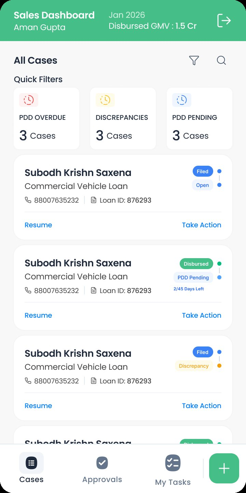

TL;DR · Rupyy · 2026 · Shipped
One status. Twelve situations.
I redesigned Rupyy's Sales case card around the three questions business managers (BMs) ask. It shipped to every loan type, and “where is my case?” tickets fell from 98 to 12 a month.
- Problem
The card showed the system's status. “Open · Open” covered twelve different situations, rejections included, and Payment Box and RTO collapsed into one pill. 197 of the 265 visibility tickets (74%) asked something the card couldn't say.
- Insight
BMs ask three things, in order: Whose move? What exactly? How far? Each got a fixed place on the card.
- Design
A colour-coded owner line, one plain sentence with no names or system codes, four stages (Disbursal, TU, Payments, RTO) that open a checklist, and a left button that follows the case.
- Proof
An informal test with 6 BMs, 84 answers. The newest BMs on the new card (86% right) beat experienced BMs on the old one (43%). The Product Head approved it for every loan type.
- Next
The Parallel moment is still the weakest (75%): an RTO line that says when nothing is needed from the BM.
Case study · Rupyy · 2026 · Shipped
One status.
Twelve situations.
A case card that tells a BM whose move it is.
Rupyy's business managers (BMs) follow every car loan from a card on their phone. The old card showed the system's status. I rebuilt it around the three questions BMs actually ask, tested it with six of them, and shipped it for every loan type.
Four teams. One loan. One pill.
A used-car loan at Rupyy passes through Sales, the Doc Checker, Payment Box and RTO. Before disbursal it can wait on approvers for bypasses and deferrals. After disbursal, Payment Box and RTO work on the same case at the same time. The BM owns the customer the whole way, and their only window into all of it was this card.

- Rejections are invisibleA rejected bypass reads exactly like a draft. The BM finds out when they call.
- Parallel work collapsesAfter disbursal, payment and RTO move at once. The card has room for one pill pair.
- Buttons ignore the caseResume is live on a case that is waiting on someone else.
- No sense of distanceNothing says how much of the loan is done, or what comes next.
The tickets said it first.
In September I read all 2,485 sales support tickets from July and August, every subject line, with the support team's labels hidden. Three themes were BMs asking where a case was, or why it hadn't moved.
##### | New Car | Case Stuck for Disbursalopen 358.5 hours · 27 messages
Re: Case is not reflecting in BM’s UJ Dashboard.open 142.8 hours · 11 messages
Disbursal pending // #####open 43.2 hours · 22 messages
Source: my Sales ticket analysis, 2,485 tickets from 745 people, 2 Jul – 31 Aug 2026. Case-hours are directional. Loan IDs masked.
Status is the system’s word. BMs ask three questions.
Every one of those tickets asks one of three things. I gave each a fixed place on the card, in the order a BM reads it.
Your step, Pending approval, In progress, Approval rejected. The colour says whether it's on the BM.
One plain sentence: what happened and what comes next. No approver names, no system codes.
Four stages a BM already knows: Disbursal, TU, Payments, RTO. Tap one for its checklist.
“Open · Open”, twelve ways.
Before filing, one status pair covers a draft, six kinds of wait and five kinds of rejection. Both cards start on the draft. Pick a wait or a rejection: only one of them notices.
From the mapping workbook I built from the status sheet: every situation against the pair it lives under. 17 situations appear under more than one pair.
Three rules decide what the card says.
One card, read top to bottom.
Same footprint as the old card, same app styles. The difference is what each line is for.
- 1Who it isCustomer, loan type and case number, plus the RTO Coordinator once one is assigned.
- 2Whose moveFour colours, one meaning each.Your stepPending · In progressRejected · DiscrepancyClosed
- 3What happened, in plain wordsA rejection carries the approver's remark. The BM never sees “MIS”, “LB Pro” or a person's name.
- 4How farEach segment is a step: green done, amber now, red stuck. Tap a stage to open its checklist.
- 5The button follows the caseFix discrepancy, Resolve pendency, Raise payment. When there's nothing to do, Resume is greyed out.
The left button, by situation
| Situation | Button |
|---|---|
| Draft, or nothing blocking | Resume |
| Bypass rejected | Fix details |
| Deferral not approved | Fix deferral |
| Doc Checker or Payment Box discrepancy | Fix discrepancy |
| RTO pendency, or originals pending | Resolve pendency |
| RTO check running | Add seller details |
| TU signed | Raise payment |
| Float rejected | Re-raise Float |
| Waiting on anyone else | Resume (inactive) |
Words, before and after
- Under DisbursementDoc Checker is reviewing the case.
- Rejected by BHApproval rejected · Remark: “…”
- Waiting on Approvers · Approvers decide the deferralsDeferrals sent for approval.
- FC pendingForeclosure pending sent for approval.
- Additional doc requiredThe RTO check needs documents or corrections from you.
Rules: no approver or teammate names, no system names, “Foreclosure” in full, one sentence where one will do.
Walk one case, twelve moments.
Case #2093, from draft to payment released, on both cards. Use the numbers or your arrow keys.
Six BMs, seven situations, two cards.
An informal test, run with a PM. Each BM saw the same seven situations on both cards, on a phone, and answered three questions: Who has this case now? What do you do next? Would you call someone or raise a ticket?
This was informal: six BMs, situations I chose, seconds counted by hand. The three newest BMs all saw the old card first, so order and experience can't be separated. I read it as a strong direction, not a measurement.
“Where is my case?” tickets fell from 98 to 12 a month.
The Product Head approved the card for every loan type, on four things: the design, the UX, what the BMs answered and the ticket baseline. It is now live.
The three themes the card answers, stuck for disbursal, case status and the missing button, counted the same way as the baseline over the first full month after launch, across every loan type.
- Baseline: 197 tickets in Jul–Aug 2026, 98.5 a month.
- Whole months only, because volume rises 61% in the last six days of a month.
- It matches the test: “would call or raise a ticket” fell from 57% to 10%.
- Other fixes can ship in the same months, so I count only the three themes the card targets.
What I learned
- Read the tickets before the screens. BMs had written the brief 197 times.
- Pick the right denominator. 197 tickets were 7.9% of everything, and 74% of the tickets about case visibility.
- Design for the newest BM. The experienced ones did better too.
What's next
- Keep counting the three themes, and watch the re-raise rate, 14.9% before launch.
- Fix the Parallel moment with an RTO line that says when nothing is needed.
- Feed the in-app ticket form the card's own state, so nobody raises a ticket the card already answers.